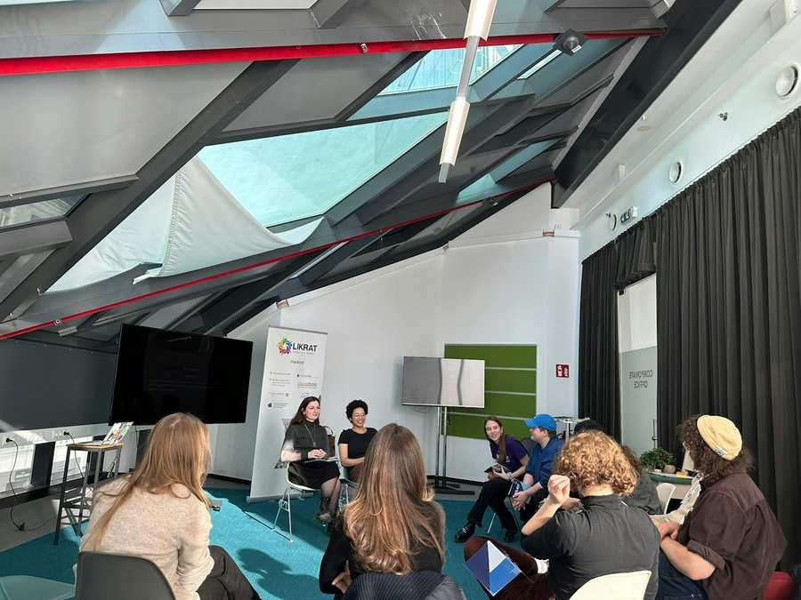
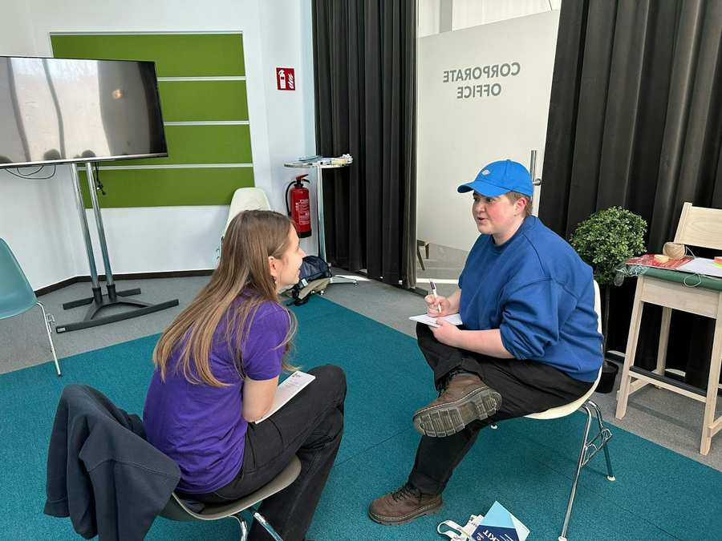
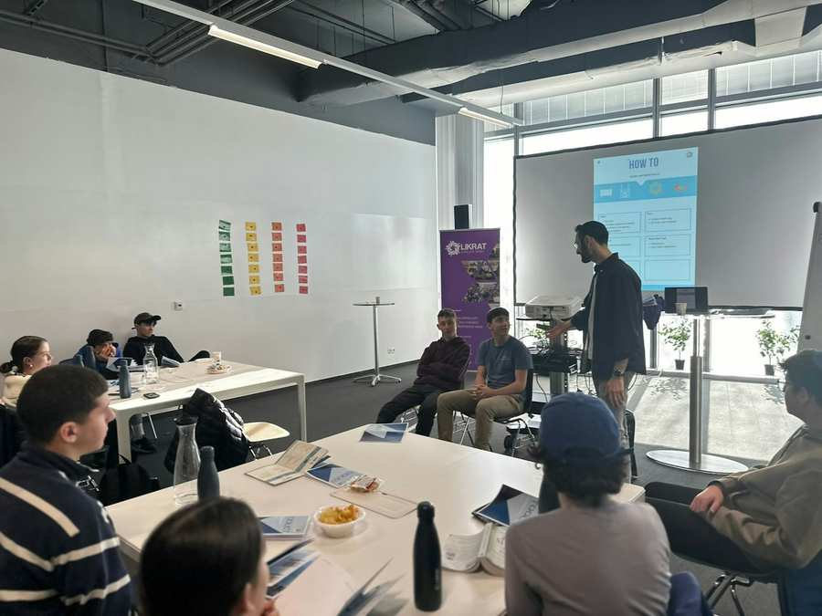
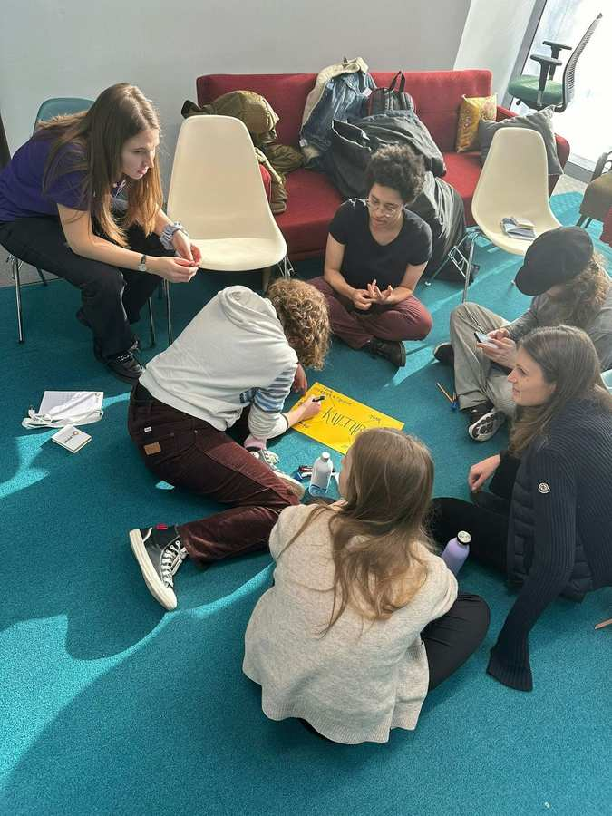
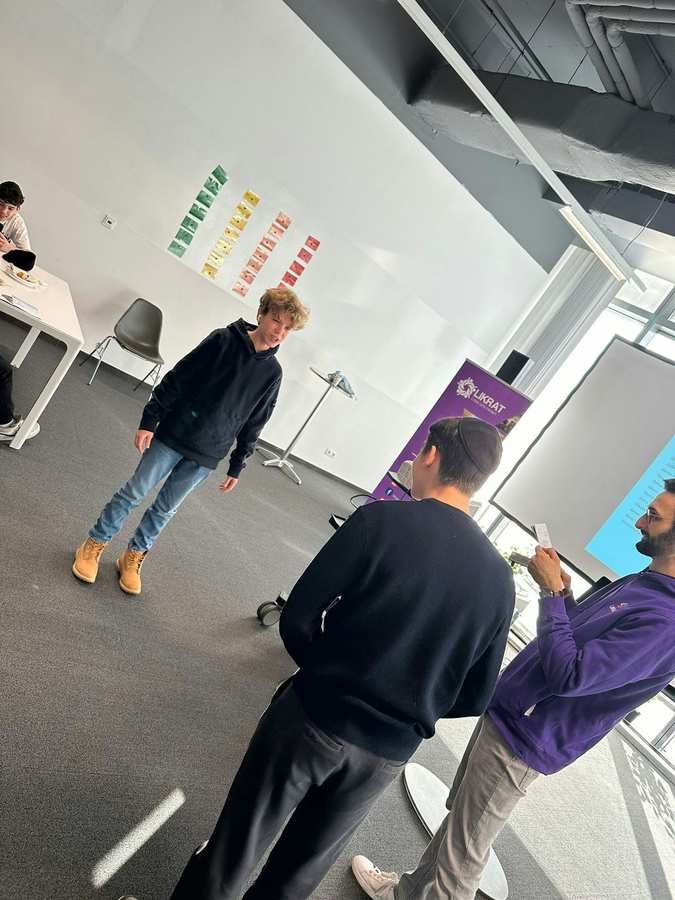
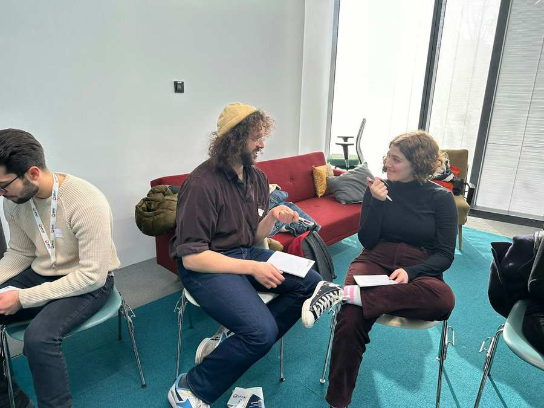

Am Sonntag, 14. Jänner, fand unser zweites Likrat-Seminar von insgesamt fünf statt. Dieses Mal stand das Thema Judentum im Mittelpunkt. Die Teilnehmerinnen und Teilnehmer erlebten einen Tag voller interessanter Aktivitäten, Lernmomenten und Teamherausforderungen.
Während des gesamten Seminars waren die Teilnehmer und Teilnehmerinnen in Gruppen eingeteilt und mussten gemeinsam Punkte sammeln. Beim Quiz konnten sie ihre Kenntnisse über das Judentum beweisen und brillieren. Es war erfreulich zu sehen, wie engagiert und wissbegierig die Likratinos und Likratinas dabei waren. Besonders beeindruckend war die Tatsache, dass sie nicht nur Zuhörende waren, sondern auch selbst zu Expertinnen und Experten wurden. Jede Gruppe hielt eine Präsentation zu verschiedenen jüdischen Themen, wodurch nicht nur das Verständnis, sondern auch die Fähigkeit zur Wissensvermittlung gefördert wurde.
Neben den lehrreichen Momenten gab es auch viel Raum für Spaß. Lustige Team-Challenges sorgten für eine lockere Atmosphäre und stärkten den Teamgeist der Gruppe. Für köstliches Essen wurde selbstverständlich auch gesorgt, um die Energie der Teilnehmenden aufrechtzuerhalten.
Parallel zu den Aktivitäten des regulären Lehrgangs fand die erste Einheit des 18+Lehrgangs statt. Wir sind besonders stolz darauf, in diesem Jahr nicht nur einen, sondern gleich zwei Lehrgänge auszubilden. Diese erweiterte Ausbildung ermöglicht es Likrat, verstärkt an Universitäten, Fachhochschulen und anderen Bildungseinrichtungen aktiv zu werden. Wir freuen uns auf weitere Seminare und sind sehr gespannt, wie sich beide Lehrgänge entwickeln.




